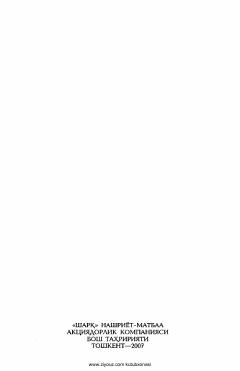

S4Taniqli yozuvchi Shukur Xolmirzayevning o'tkir va falsafiy esselar to'plami.
O'zbek adabiyotining atoqli namoyandasi Shukur Xolmirzayevning ushbu saylanma to'rtinchi jildiga adibning turli yillarda yozilgan sara esselari kiritilgan. Kitobda muallifning jamiyat, hayot, ijod va insoniylik haqidagi teran o'ylari bayon etilgan. Asarlar o'zining sammiyligi va falsafiy mazmuni bilan ajralib turadi.